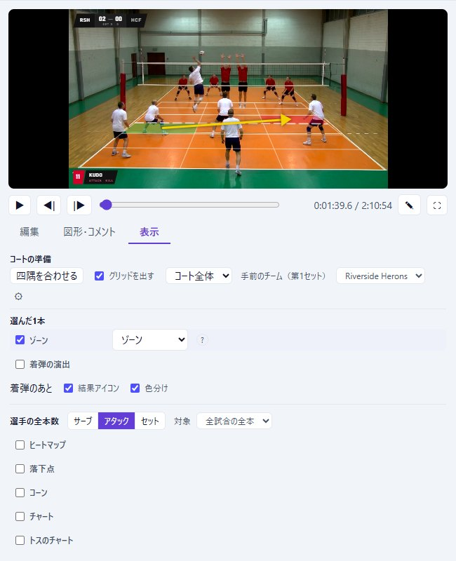

7. コートの表示
コートのグリッドを合わせた試合では、スカウトファイルの位置の情報を動画のコートの上に描けます。設定は動画の下の表示タブにまとまっています。

コートの準備
タブの一番下に畳んであり、押すと開きます。試合ごとに一度合わせれば、ふだんは開かなくてかまいません。四隅を合わせている間は開いたままです。
グリッドの四隅と手前のチーム（第 1 セット）を合わせます（3 章）。グリッドを出すでグリッドを表示し、コート全体・上半分・下半分から出す範囲を選べます。⚙ でグリッドの色・濃さ・線の太さを変えます。
選んだ 1 本
プレー一覧やシーンで選んだプレーについて、動画の上に出すものです。
- ゾーン：始まりのゾーンを緑、終わりのゾーンを赤で塗り、矢印で結びます。サブゾーンや、スカウトが打った点の位置でも出せます。
- 着弾の演出：サーブやアタックが落ちる場所に、光の輪が広がるなどの効果を出します。始まりの秒数を、動画のボールに合わせて調整します。
- 着弾のあと：結果アイコンで、落ちたあとに結果のアイコン（エース・決定は星、ミスはバツ、ブロックは盾）を出します。色分けで、軌道を結果の色に変えます。


選手の全本数
サーブかアタックかセットを選んだとき、その選手の全試合のプレーを重ねて出します。サーブ・アタック・セットのタブごとに設定を覚えます。対象で、全試合か、この試合・シーン・マーカー・ラリーだけかを選びます。
| 表示 | 中身 |
|---|---|
| ヒートマップ | その選手の打った先を色の濃さで出します。コートを押すと、近い 5 本が一覧に出ます。 |
| サーブ軌道 | 選んだサーブと一緒に、その選手のサーブを全部飛ばします。 |
| 落下点 | 落ちた位置を点で出します。点を押すと、そのプレーへ移ります。 |
| コーン | アタッカーの打った位置から 5 方向の扇形を広げ、それぞれの割合を出します。 |
| チャート | その選手のコース図を、結果の色で動画の隅に出します。 |
| セット配分・トスのチャート | セットかその次のアタックを選んだとき、そのセッターのそのローテーションでのトスの行き先を、コートの上やチャートで出します。 |


自動表示
タブの一番下で、すべてのクリップに自動で出すものを選びます。
- スコアボード：そのラリーの前の得点とセット数です。左が自チームです。
- テロップ：プレーした選手の背番号・名前・スキル・評価です。名前は、この動画だけ、このクリップだけの書き換えもできます。
- 分析表示：上の「選んだ 1 本」「選手の全本数」の表示を、そのクリップに出すかどうかです。
- サーブ速度：編集タブでサーブを打ったコマ（ヒット）とレシーブが触れたコマ（タッチ）を付けると、その間の平均の速さ（km/h）を出します。
- ローテーション：両チームのコート上の 6 人を、小さなコートに背番号で出します。動画の手前にいるチームが下に出ます。
表示タブで決めるのは「出すかどうか」です。位置・大きさ・デザイン・配色は、表示タブの見た目は「動画の設定」から開く動画の設定で変えます（10 章）。動画の上に見えているものは、そのまま書き出しにも入ります。